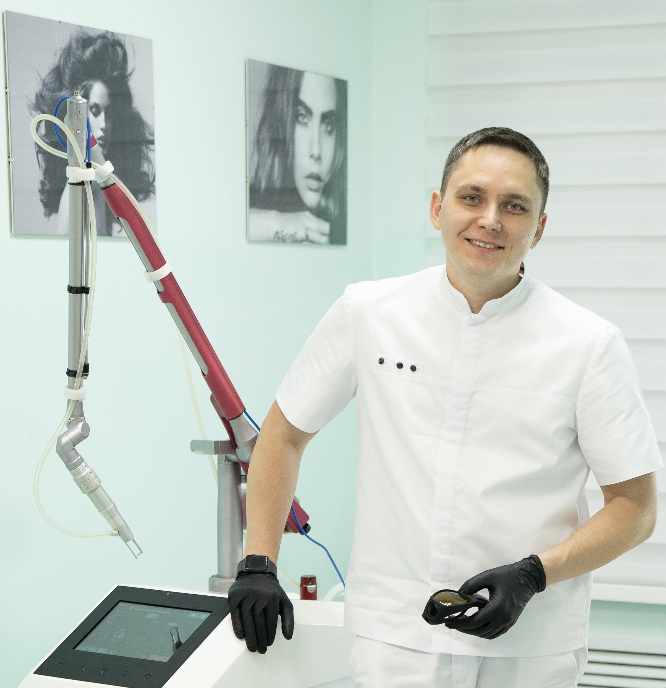
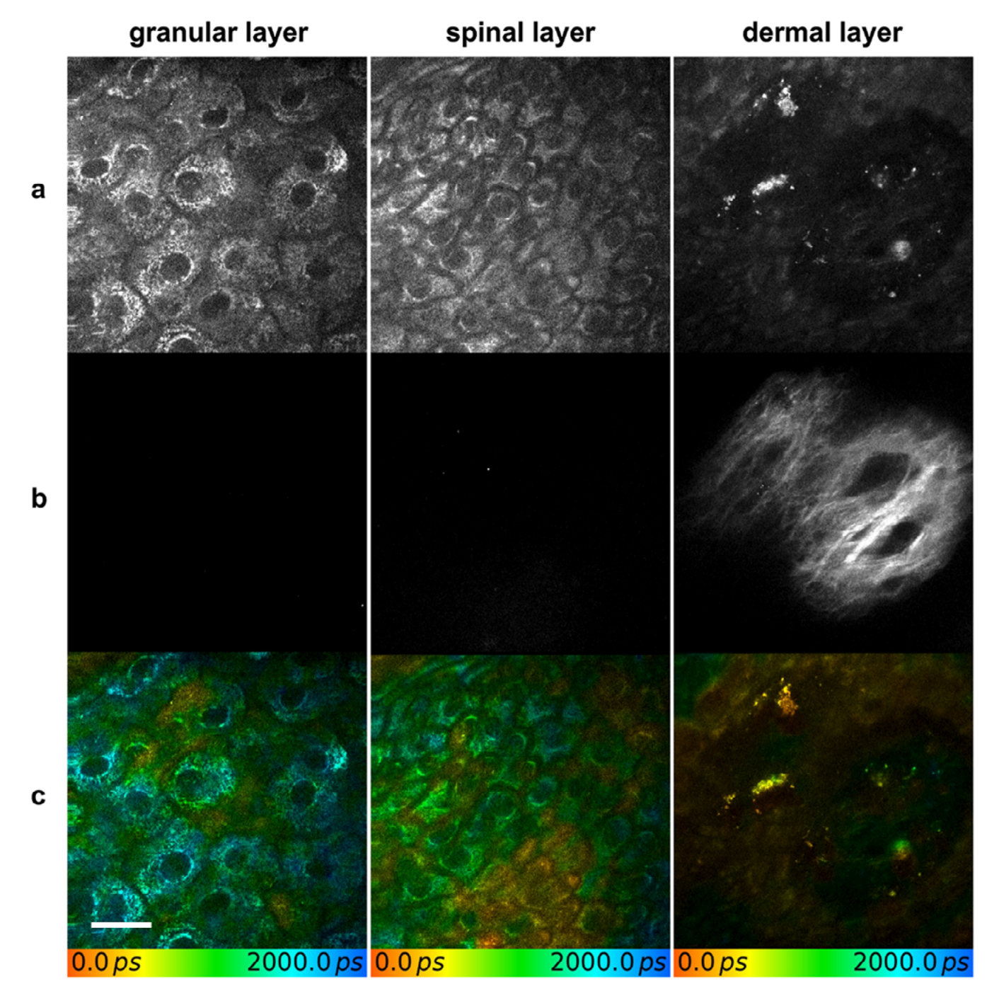
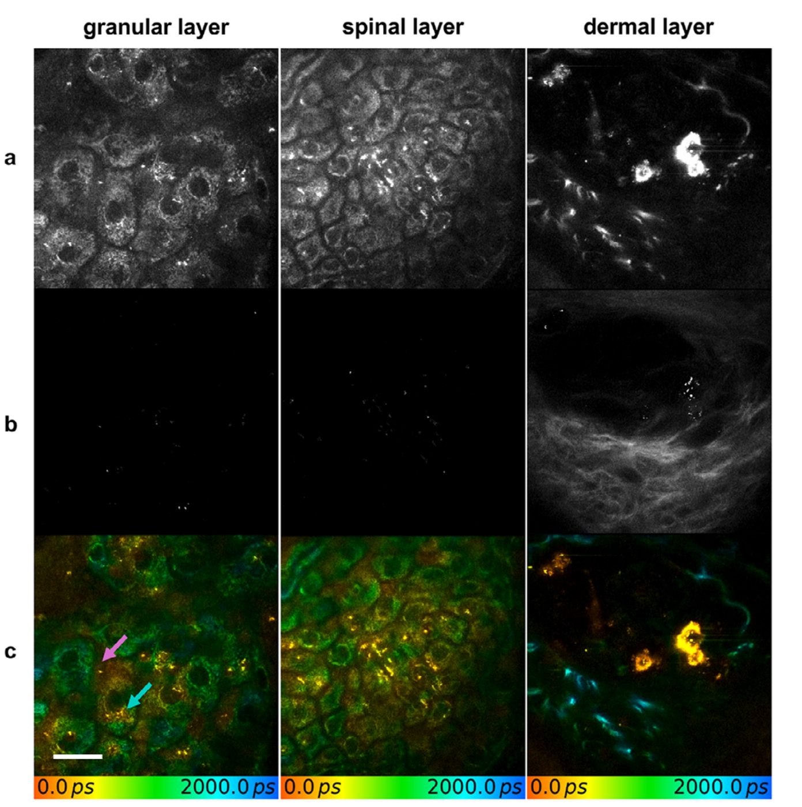
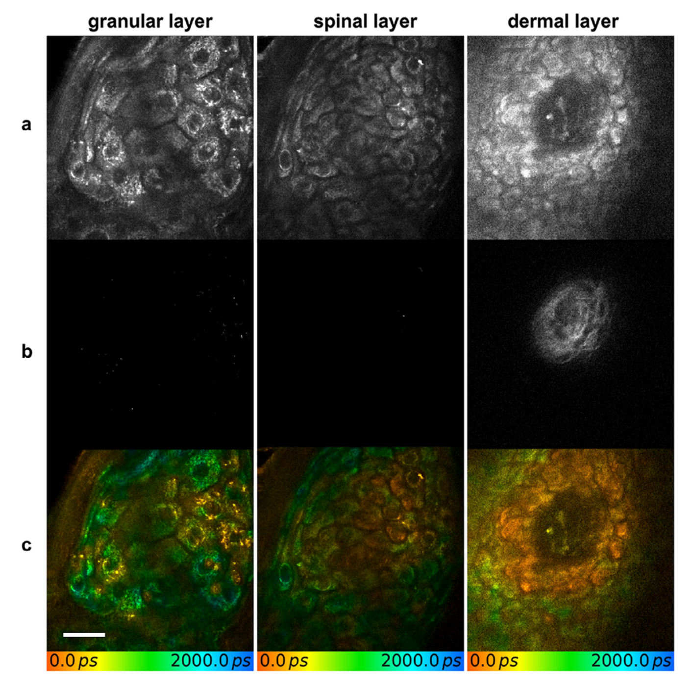

Не только лазер
Неочевидные факторы, которые решают, сколько сеансов понадобится для удаления татуировки
Виталий Микрюков

Один аппарат. Одни настройки.
Похожие татуировки.
У одного клиента рисунок уходит за 5 сеансов, у другого — не уходит и за 15. Почему?
Очевидные факторы — их знают все.
Сегодня — не о них. Сегодня о том, что происходит после вспышки и внутри пациента. О факторах, которые чаще всего не записывают в карту — а они решают исход не меньше лазера.
Лазер делает только первый шаг из четырёх.
Лазер разбивает частицы. Убирают их макрофаги и лимфатическая система — то есть организм пациента. Всё, что влияет на иммунитет, кровоток и лимфоток, влияет и на скорость удаления.
Результат — это произведение, а не сумма.
Пико или нано? Честный эксперимент.
По очищению — вничью. По боли — разница вдвое.
По-простому: пикосекундный лазер оказался заметно менее болезненным, но за 2 сеанса не удалил тату быстрее. Другие работы (Lorgeou 2018, Kono 2020) находят преимущество пико, так что спор продолжается. Но если даже тип лазера не даёт гарантированной скорости — скорость решается где-то ещё.
Даже в экспертном центре — далеко не «за 5 сеансов».
за 10 сеансов
за 15 сеансов
Это не реклама и не «до/после» лучших случаев — это вся когорта. Половина пациентов не уложилась в 10 сеансов. Авторы задали вопрос: от чего это зависит? — и посчитали все факторы одновременно.
Четыре группы неочевидных факторов.
В конце — как превратить это в прогноз на консультации и честный разговор с клиентом.
Иммунитет —
главный «ластик»
Почему татуировка вообще держится десятилетиями — и почему её так трудно убрать.
Почему тату держится годами.
Пигмент живёт в дермальных макрофагах. Когда макрофаг гибнет, пигмент не исчезает — большую часть сразу захватывает новый макрофаг, и только малая часть уходит по лимфе в лимфоузел. Цикл «захват → высвобождение → повторный захват» повторяется годами.
Убрали все макрофаги — а тату осталась.
Лимфоузел — конечная станция.

Что сильнее всего было связано с результатом?
Учёные нанесли одинаковые чёрные тату на кожу крыс и обработали их четырьмя разными лазерами: 1064 нм нано, 1064 нм пико, 755 нм и 595 нм. Потом смотрели под микроскопом, что происходит в коже.
Поднимите руку: A, B или C?
Работает там, куда пришли макрофаги.
Наша задача — не мешать «уборщикам».
Лазер измельчает пигмент — но выносят его клетки пациента. Всё дальнейшее в докладе — о том, что помогает или мешает этим клеткам.
Крем-иммуностимулятор — не работает.
Пациентов со сниженным иммунитетом просто исключают.
Мы не знаем, насколько медленнее идёт удаление у таких пациентов — их нет в выборках. Но если «ластик» — это иммунитет, логично закладывать больший запас сеансов и интервалов и обсуждать это честно.
Образ
жизни
То, что пациент делает между сеансами, — курение, вейп, питание, солнце.
Курение
Шанс полного удаления за 10 сеансов у курящих ниже на 70%. Это единственный фактор образа жизни, который измерили на большой когорте, — и с 2012 года его никто не перепроверял.
×3,25 — даже с поправкой на всё остальное.
Авторы прямо пишут, что это новая находка, требующая подтверждения в независимых работах. Но масштаб эффекта такой, что игнорировать его на консультации уже нельзя.
Курение бьёт по тем самым шагам 2–4.
Лазер у курящего работает так же. Но организм, который должен вынести пигмент, работает хуже. Это прямая иллюстрация формулы: множитель «Организм» уменьшается.
Вредит дым целиком, а не только никотин.
Поэтому никотиновый пластырь — не то же самое, что сигарета. А отказ от курения на время курса биологически обоснован — хотя именно для тату это пока не доказано.
Данных по тату — ноль. Но механизмы те же.
Моя позиция: пока нет данных, считаем вейп сигаретой при прогнозе. Это экстраполяция, а не доказанный факт — так и говорим пациенту.
Веганы и всеядные: одинаковые тату, разный результат.
Это та же исследовательская группа, что нашла эффект курения. Они исключили известные факторы — и посмотрели на то, что пациент ест.
Веганам понадобилось в 1,5 раза больше сеансов.
веганы / всеядные
веганы / всеядные
после каждого сеанса
Больше сеансов, хуже итоговое осветление и дольше восстановление после каждой процедуры — все различия статистически значимы (p от < 0,001 до 0,006).
Дефициты, которые могут тормозить «уборку».
Не «агитировать за мясо», а спросить о питании.
Мы не лечим анализы. Мы честно прогнозируем — и пациент понимает, что «медленно» не значит «плохой лазер».
Загар — не помощник, а риск.
Солнце само частично «стирает» органические пигменты — но ценой токсичных продуктов распада. А загорелая кожа во время курса — это меньше энергии, больше дисхромий и пауз. Фотозащита — часть протокола, а не пожелание.
Чего мы НЕ знаем.
«Пейте больше воды», «делайте лимфодренаж», «ходите в баню» — рецензируемых данных об ускорении удаления нет. Единственный изученный фактор образа жизни — курение, и с 2012 года его никто не перепроверял.
Пациент
и его кожа
Возраст, пол, фототип. Здесь исследования начинают спорить друг с другом — и это самое интересное.
Чем старше пациент — тем хуже результат?
А в Китае — ровно наоборот.
Почему два исследования спорят?
| Италия · Bencini 2012 | Китай · Zhang 2018 | |
|---|---|---|
| Пациентов | 352 | 266 |
| Медиана возраста | 30 лет | 25 лет |
| Медиана площади тату | 50,5 см² | 12,4 см² |
| Любительские тату | исключены | 16% выборки |
| Фототипы | I–V | III–IV |
| Что считали успехом | полное удаление | очищение ≥ 76% |
| Медиана сеансов | 10 | 3 |
Разные пациенты, разные тату, разные критерии успеха. Ни один фактор не работает в вакууме: он всегда взаимодействует с остальными. Поэтому прогноз строим по совокупности, а не по одному признаку.
Что важно — и что нет — на современном лазере.
Вывод для практики: на пикосекундном лазере прогноз определяют сама тату и место — плотность, техника, возраст, зона. А привычные «возраст и пол клиента» почти ничего не решают.
Старая тату: легче или тяжелее?
U-образная кривая: самое трудное — от 1 до 5 лет.
Плотность и техника — сильнее всего.
От низкой плотности к высокой — почти втрое больше сеансов (самый сильный фактор модели, p < 0,0001). Модель из четырёх факторов предсказывает число сеансов с точностью около ± 2,3 сеанса.
Пол пациента — не фактор.
разница незначима (p = 0,06)
разница незначима (p = 0,59)
Ни в одном из трёх исследований (Италия, Китай, Швейцария 2025: p = 0,80) пол не стал самостоятельным предиктором. Если женщины в вашей практике «уходят быстрее» — скорее всего, дело в размере, локализации и курении, а не в поле.
Фототип решает про безопасность, а не про скорость.
Тату «выступает» над кожей — это красный флаг.
В китайской когорте все 14 приподнятых татуировок к концу лечения дали изменения текстуры или гипертрофические рубцы. Рельеф — признак гранулёмы или фиброза: пигмент «замурован», а кожа уже реагирует. Фиксируйте это до первого сеанса и обсуждайте с клиентом.
Место
и время
Где находится тату и как часто мы работаем — два фактора, которыми специалист управляет напрямую.
Лицо — 90%. Стопа — 12,5%.
Одинаковый пигмент, одинаковый лазер, один врач — а доля полного удаления за 10 сеансов различается в 7 раз в зависимости только от того, где находится тату.
Кровь и лимфа — транспорт для пигмента.
Лицо — не всегда самая лёгкая зона.
Кисти, пальцы, голени, лодыжки стабильно трудные во всех когортах. А вот гладкая градация «чем дальше от сердца — тем хуже» опирается больше на логику, чем на измерения. На лодыжке ещё и дольше заживало — сеансы приходилось откладывать.
Чаще — не значит быстрее.
Пигмент выходит месяцами — в том числе через эпидермис.



Через 12 недель выведение ещё продолжается. А в небольшой израильской серии тату продолжали светлеть и через 4–5 лет после последнего сеанса. Повторный сеанс через 4 недели прерывает работу, которая ещё идёт.
Несколько проходов за визит — тоже фактор.
Все эти работы — на малых выборках (12–30 пациентов). Многопроходность работает, но это инструмент, а не волшебная кнопка: чем больше проходов, тем выше воспалительная нагрузка на кожу.
Любительская тату почти всегда уходит.
Любительский пигмент — часто сажа, тушь, графит, нанесённые поверхностно и неравномерно. Профессиональная работа — плотные смеси пигментов глубже в дерме. В многофакторной модели профессиональная тату в 2 раза хуже (HR 0,49).
Сколько сеансов нужно до отличного результата.
Плотность — фактор «очевидный», но его масштаб недооценивают: от разреженной к плотной работе число сеансов растёт в 3,6 раза, а шанс отличного результата падает с 97% до 33%.
Плотность пигмента — масштаб недооценивают.
«Очевидный» фактор весит больше, чем все неочевидные вместе — оценивайте плотность первой.
Кавер — в 2,5 раза меньше шансов.
Полное удаление за 10 сеансов: 1 из 5 перекрытых тату против 1 из 2 обычных.
Чем больше площадь — тем дольше путь.
Потемнение — фактор, который появляется по ходу.
Потемнение (TiO₂, оксиды железа) — это не только косметическая проблема, а прогностический фактор: такие тату уходят хуже. Поэтому тест-пятно на светлых и телесных пигментах — часть прогноза, а не формальность.
Как это
использовать
Превращаем факторы в прогноз на консультации и в честный разговор с клиентом.
Шесть параметров — ориентир числа сеансов.
| Параметр | Баллы | Что даёт больше баллов |
|---|---|---|
| Фототип (Fitzpatrick) | 1–6 | более тёмная кожа |
| Локализация | 1–5 | дальше от головы: голова/шея 1 → кисть/стопа 5 |
| Цвет | 1–4 | много цветов, кроме чёрного и красного |
| Количество чернил | 1–4 | любительская 1 → плотная профессиональная 4 |
| Рубцы, изменения ткани | 0–5 | рубец, рельеф, следы прошлых попыток |
| Перекрытие (кавер) | 0 / 2 | есть кавер |
Сумма баллов ≈ ориентировочное число сеансов (± 2,5). В валидации на 100 пациентах прогноз совпал с реальностью с корреляцией R = 0,76.
Зачем понадобилась замена Кирби-Десаи?
Задача шкалы — честно назвать клиенту число сеансов до старта. Если завысить — клиент испугается цены и уйдёт. Если занизить — разочаруется и бросит курс на середине.
Сумма баллов ≈ число сеансов.
| Параметр | Баллы |
|---|---|
| Стиль тату — новый главный параметр | трайбл 7 · леттеринг 5 · олдскул / блэкворк 4 · геометрия, орнамент 3 · реализм, гравюра 2 |
| Плотность пигмента | высокая 3 · средняя 2 · низкая 1 |
| Локализация | кисти, стопы, костные выступы 2 · всё остальное тело 1 |
| Цвет | только чёрный или красный 1 · многоцветная 3 · с пастельными оттенками 5 |
| Рубцы | есть 3 · нет 0 |
| Кавер | есть 2 · нет 0 |
| Любительская тату | минус 2 от суммы |
Складываем баллы по каждой строке — получаем ориентировочное число сеансов на пикосекундном лазере. В исследовании в среднем выходило 8,4 сеанса.
Блэкворк на плече: 11 или 8 сеансов?
Разница в 3 сеанса — это разница в цене курса и в доверии клиента. Пример расчёта наш, по правилам обеих шкал.
Что поменялось в логике прогноза.
| Кирби-Десаи · 2009 | PT · 2026 | |
|---|---|---|
| Лазер | Q-switched (нано) | пикосекундный |
| Фототип | 1–6 баллов | убран — не был связан с числом сеансов |
| Стиль тату | нет | главный параметр, 2–7 баллов |
| Количество краски | 4 ступени, от любительской до плотной | плотность 1–3 + любительская −2 |
| Локализация | 5 ступеней: от головы до стоп | 2 ступени: кисти, стопы, кости — или всё остальное |
| Цвет | 4 ступени | 3 ступени; пастель = максимум 5 баллов |
| Рубцы / кавер | 0–5 / 2 | 3 / 2 |
Новая шкала ошибается в 4 раза меньше.
Шкала не знает о самом пациенте.
Поэтому я использую шкалу как базу, а факторы организма — как поправку к прогнозу. Шкала оценивает тату. Мы оцениваем человека с тату.
Что МОЖНО изменить.
Это то, чем специалист и пациент управляют вместе. Именно здесь — разница между 8 и 15 сеансами.
Что НЕЛЬЗЯ изменить — только учесть.
Эти факторы не исправить — но о них нужно сказать клиенту до первого сеанса, а не после пятого.
Слова, которые снимают половину претензий.
Клиент, который понимает, что он сам — часть процесса, легче переносит долгий курс и доходит до конца.
Лазер разбивает.
Удаляет — организм.
© В. Микрюков, 2026
Что забрать с собой.
Лазер выполняет 1 шаг из 4. Фагоцитоз, транспорт и выведение — работа организма.
Курение снижает шанс удаления за 10 сеансов примерно на 70% (HR 3,25).
Интервал больше 10 недель работает лучше частых сеансов (HR 1,72).
Локализация, питание, история тату меняют прогноз сильнее, чем мы привыкли думать.
Факторы взаимодействуют: прогноз строится по совокупности — шкала плюс организм.
Спасибо!
Удаление татуировки — это совместная работа лазера, специалиста и организма пациента.